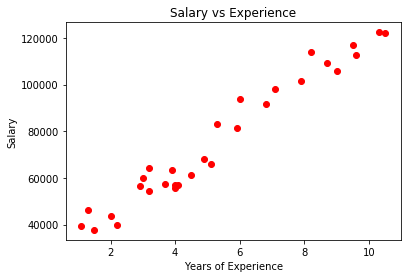
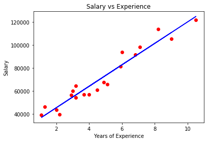
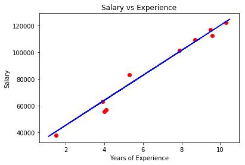

Simple linear regression is a statistical method that allows us to summarize and study relationships between two continuous variables:
One variable denoted X, is regarded as independent vaiable.
The other variable, denoted y, is regarded as the dependent variable.
Formula: $$y = b_0 + b_1 * X_1$$
Simple Linear Regression Implimentation
Here we use a simple dataset to train a simple linear regression model. The dataset contains the year of working experences and the salary for each working years.
1 2 3 4 5 6 7 8 9
# Importing the Libaraies import numpy as np import matplotlib.pyplot as plt import pandas as pd
# Importing the Dataset dataset = pd.read_csv('Salary_Data.csv') X = dataset.iloc[:, :-1].values y = dataset.iloc[:, 1].values
# Plot the dataset plt.scatter(X, y, color = 'red') plt.title('Salary vs Experience') plt.xlabel('Years of Experience') plt.ylabel('Salary') plt.show()

From the diagram we can see that he dataset is following some kind of linear relationship between X and y. Our goal is to find a model that could fit the data perfectly.
1 2 3 4 5 6 7 8 9 10 11 12 13 14 15
# Splitting the dataset into Training set and Test set from sklearn.model_selection import train_test_split X_train, X_test, y_train, y_test = train_test_split(X, y, test_size = 1/3, random_state = 0)
# Fitting Simple Linear Regression to the Training set # Scikit-Learn does the feature scaling for us so we do not need to do that from sklearn.linear_model import LinearRegression regressor = LinearRegression() regressor.fit(X_train, y_train)
# Predict the Test set result y_pred = regressor.predict(X_test)
# Viualising the Training set result plt.scatter(X_train, y_train, color = 'red') plt.plot(X_train, regressor.predict(X_train), color = 'blue') plt.title('Salary vs Experience') plt.xlabel('Years of Experience') plt.ylabel('Salary') plt.show()

1 2 3 4 5 6 7
# Viualising the Test set result plt.scatter(X_test, y_test, color = 'red') plt.plot(X_train, regressor.predict(X_train), color = 'blue') plt.title('Salary vs Experience') plt.xlabel('Years of Experience') plt.ylabel('Salary') plt.show()

By using Scikit-Learn LinearRegression module, we trained out model with X_train, y_train. And we found our Simple Linear Regression model showing as the blue line in above two diagrams. In the last diagram we can see our model fits the test dataset very well.